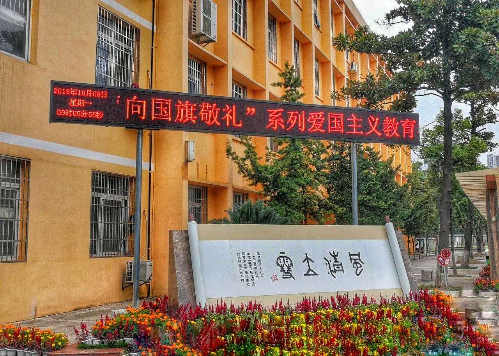
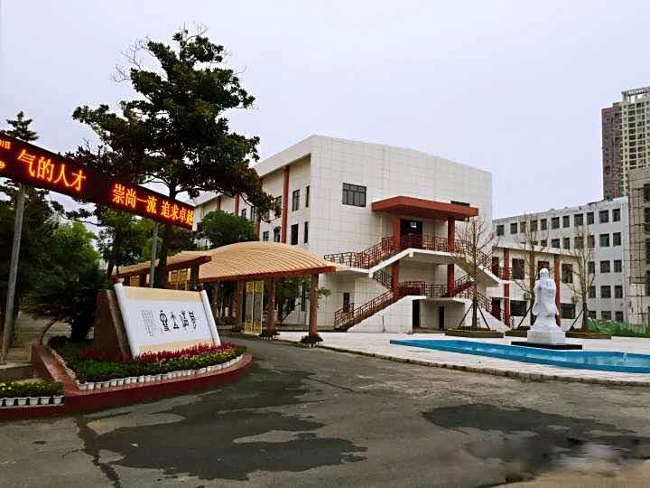
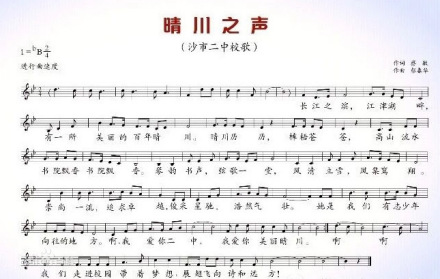

沙市二中
全名：荆州市沙市第二中学
目前分为晴川校区和太岳校区
晴川校区为8,9年级学习校区，太岳校区为7年级学习校区
以下是晴川校区图片
以下是太岳校区的图片


沙市二中校歌--------------------晴川之声
这首歌七年级音乐课上首次登场，是二中校歌，以下是其校歌

学校历史
荆州市沙市第二中学源于1912年创办的“晴川书院”，为汉阳府所属汉阳、汉川、黄陂、孝感等县旅沙同乡会捐建，因汉阳的晴川阁而得名。1936年定名为“江陵县沙市私立晴川初级中学”，1994年更为“荆州市沙市第二中学”。沙市二中于2008年8月由沙市便河西路2号整体搬迁至沙市晴川路9号
学校现有在岗教职工191人，其中高级教师52人，具有研究生学历教师5人，现有43个教学班，在校学生2320人。
沙市二中校训：风清立雪
风清”为做人之本，“风清气正”，是一种儒雅的气质，更是一种正气的宣扬；“立雪”是做事之道，来自“程门立雪”，是一种尊师重教的美德，更是一种矢志不移的精神。“风清立雪”将道家天人合一的情怀与儒家进取向上的精神结合在一起，不仅传承了“儒”“道”思想的精髓，更注入了新时代的新内涵。“风清立雪”之核心价值观就是风清气正、珍惜情缘、尊师重教、矢志不移。
“学风为学校之本，校训乃学校学风之魂”。二中校训“风清立雪”以精炼的语言、深蕴的内涵、大气雅致的风范于教师的教和学生的学两方面提出了极高的要求和目标